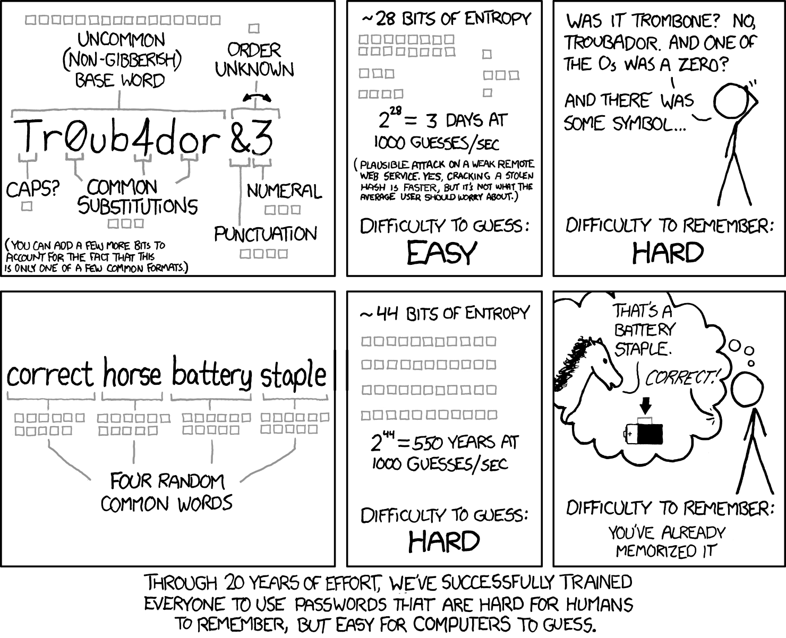
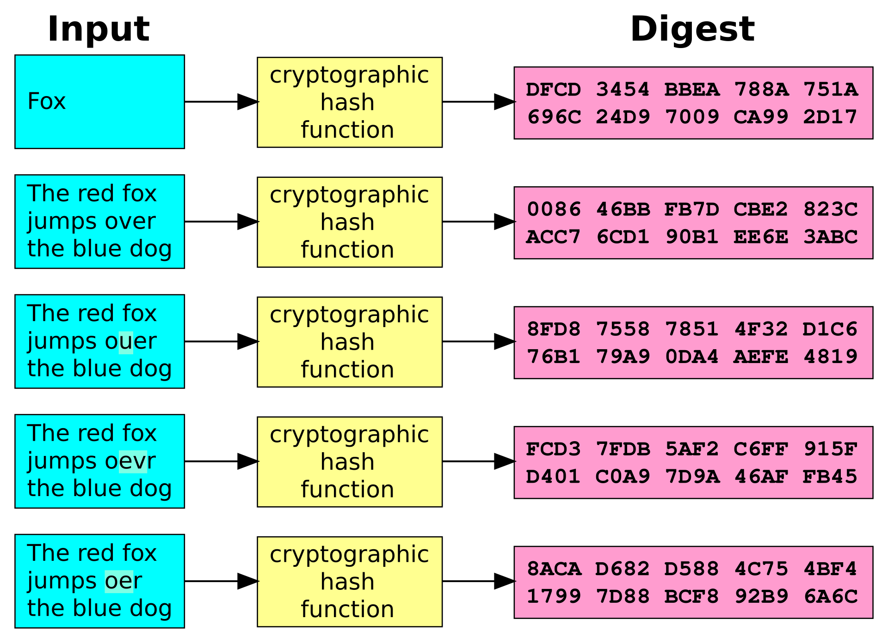
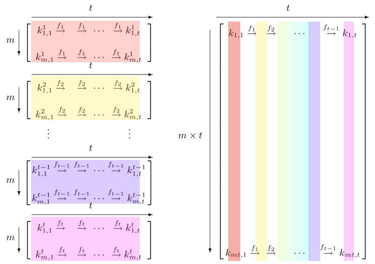
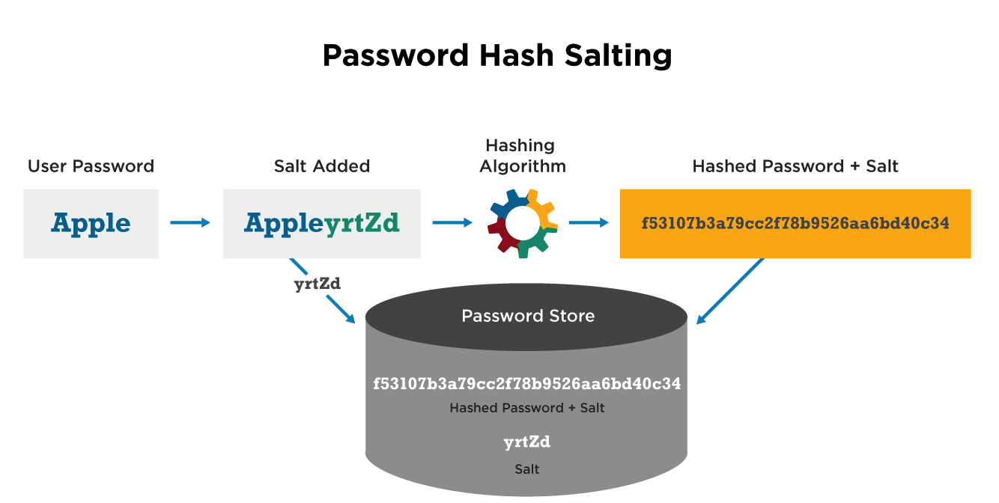
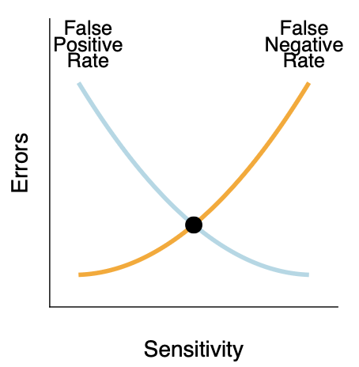
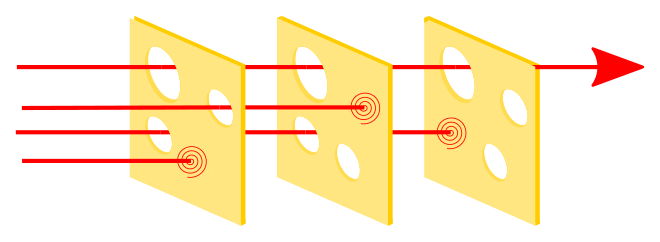

Main ways to check
Authentication usually comes from one of three kinds of evidence
- What you know
- What you have
- What you are
OSTEP 54
This slide deck is still under active development. Expect changes before it is finalized.

Authentication usually comes from one of three kinds of evidence
Passwords
Before we trust passwords, we need to ask:


Say somebody manages to get our password file….
If it’s hashed, do we have a problem?
YES! They can try all the hashes!
So how do we fix this?

saltsalt is a little extra information added to every password
salt
salting work?
Cards and Keys
Biometrics
Are these the same cat?

Authentication is stronger when we combine things that fail in different ways.
